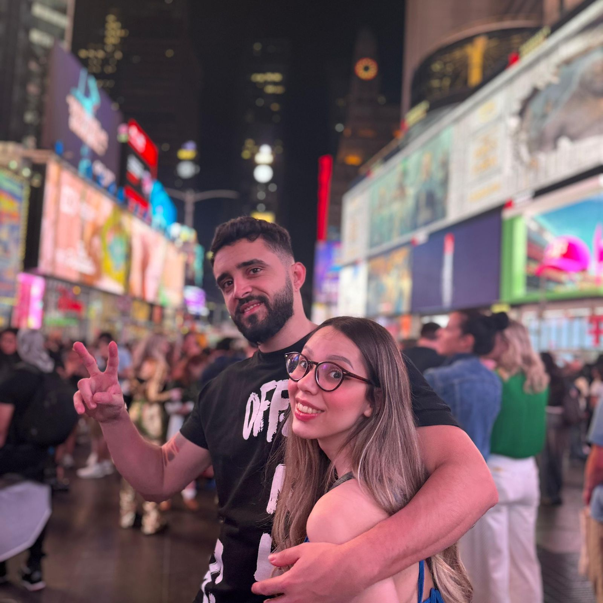

Giovana e Leandro
Uma história de amor diretamente de Nova York, o que antes era apenas uma amizade se transformou em algo mais intenso e verdadeiro. Sem dúvidas, Nova York ficará marcado na vida dos dois como o início de uma vida juntos!
